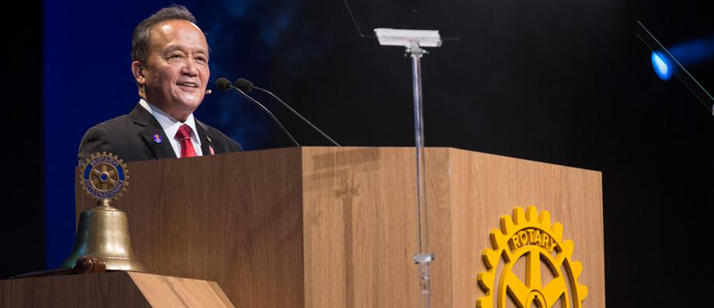
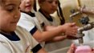
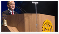
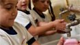
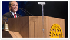

ЛАСКАВО ПРОСИМО ДО СПІЛЬНОТИ rОТАry
Ми з'єднуємо лідерів, зв'язати різні точки зору і побудувати довгострокові відносини, щоб вжити заходів у наших громадах в США і по всьому світу. Ми дізнаємося, хто ми, що ми робимо, і ми беремо на себе деякі з найбільш складних проблем. Дізнатися про Ротарі клубу та округу ролей, а також їх вплив на ваше співтовариство. Знайти ресурси та інструменти, які підтримують членів у цих ролях...Детальніше
новини

Майже 200 мільйонів днів відвідування школи губляться кожен рік через відсутність належних санітарних умов. Багато випадків діареї у дітей в результаті передачі захворювання у школах, а не вдома. “Школа-це місце, де дитина...Детальніше
Майже 200 мільйонів днів відвідування школи губляться кожен рік через відсутність належних санітарних умов. Багато випадків діареї у дітей в результаті передачі захворювання у школах, а не вдома. “Школа-це місце, де дитина...Детальніше
Майже 200 мільйонів днів відвідування школи губляться кожен рік через відсутність належних санітарних умов. Багато випадків діареї у дітей в результаті передачі захворювання у школах, а не вдома. “Школа-це місце, де дитина...Детальніше
Майже 200 мільйонів днів відвідування школи губляться кожен рік через відсутність належних санітарних умов. Багато випадків діареї у дітей в результаті передачі захворювання у школах, а не вдома. “Школа-це місце, де дитина...Детальніше
фотоальбом
 


